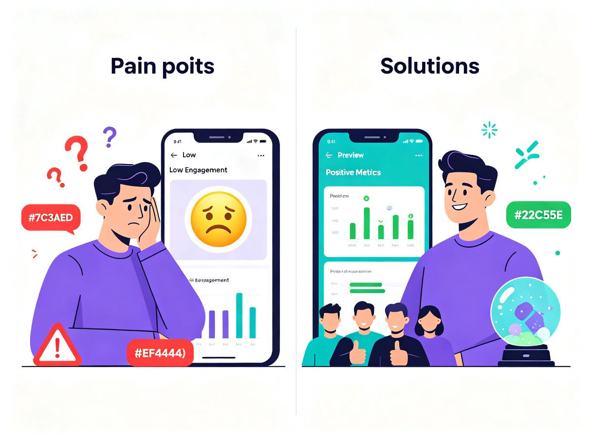
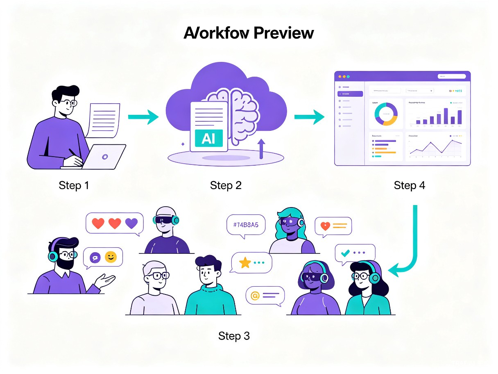

创意介绍
核心问题：内容创作者发布社交内容前，缺乏低成本、快速验证内容表现的手段，只能"发了再说"，反馈滞后且不可控。
灵感来源
团队日常运营中多次遇到精心准备的内容发布后反响平平，而临时起意的内容反而爆火。反复踩坑后意识到：如果能在发布前用"虚拟观众"试映一遍，提前看到不同人群的反应和互动行为，就能大幅提升内容质量和发布信心。
产品形态
一个 Web 工作台，用户输入一条待发布内容，系统自动生成多类 AI 观众画像，模拟他们在类小红书场景下的完整浏览、点赞、收藏、评论、分享等行为流，最终输出包含行为证据链的试映报告。
目标用户及痛点
核心用户群体
自媒体创作者、MCN 运营团队、品牌内容营销人员，以及所有需要在社交平台发布内容但缺乏数据反馈的个人或组织。
使用场景
用户完成一条图文内容草稿后、正式发布前，打开 TryCue 进行试映。观察不同观众画像的实时反应，调整标题、封面、正文，再试映，直到满意为止。
❌ 没有 TryCue
- 只能依赖经验猜测内容效果
- 发布后才能看数据，反馈周期长
- 小号测试成本高且不真实
- 熟人圈层反馈，无法覆盖目标受众
- 试错成本高，优质内容被埋没
✓ 使用 TryCue
- AI 虚拟观众秒级反馈
- 发布前即可预判内容表现
- 多画像覆盖，精准触达目标人群
- 分钟级迭代，调整-试映-优化闭环
- 降低试错成本，提升发布信心

核心工作流
输入内容
粘贴或上传待发布的图文内容草稿
AI 生成画像
系统自动创建多类虚拟观众画像
模拟试映
虚拟观众浏览、互动、评论
输出报告
行为证据链 + 优化建议

flowchart TD
A[📝 创作者输入内容草稿] --> B[🤖 AI 生成观众画像]
B --> C1[👩💼 职场白领]
B --> C2[🎓 大学生]
B --> C3[👶 新手妈妈]
B --> C4[🏃 健身达人]
C1 --> D[🎭 模拟小红书浏览场景]
C2 --> D
C3 --> D
C4 --> D
D --> E[📊 收集互动行为数据]
E --> F[📈 生成试映报告]
F --> G{创作者满意?}
G -- 否 --> A
G -- 是 --> H[🚀 正式发布]
价值与意义
效率提升
将传统"发布-等数据-复盘-再发"的数天反馈周期压缩到分钟级，创作者在同一工作台内完成试映、观察、调整、再试映的闭环。
商业价值
单条内容的试映成本远低于一次失败发布的机会成本。数据积累可建立内容表现预测模型，为选题策划和投放决策提供量化依据。
社会价值
降低优质内容的创作门槛，让没有数据资源的个人创作者也能科学地优化内容，促进创作生态的多样性与公平性。
技术构想
AI 观众画像引擎
基于大语言模型构建多维度用户画像（年龄、职业、兴趣偏好、消费习惯等），每个画像具备独立的"审美观"和"行为模式"，能对不同类型内容产生差异化的真实反应。
行为模拟引擎
模拟类小红书场景下的完整用户行为链：信息流浏览 → 封面点击 → 图文阅读 → 互动决策（点赞/收藏/评论/分享/划走），每个决策节点都有画像驱动的概率模型。
试映报告生成
汇总所有虚拟观众的行为数据，生成结构化试映报告：互动率预测、各画像偏好分析、内容优化建议（标题、封面、正文结构），并提供行为证据链支撑每个结论。